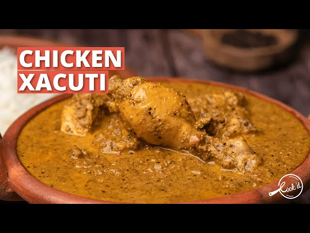
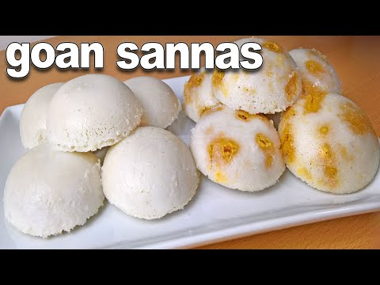
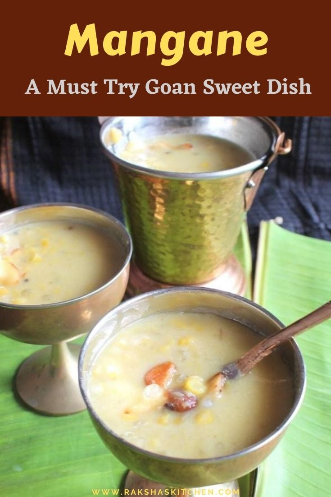

HELLO GOA!
HERE ARE SOME FAMOUS FOOD FROM GOA



Veg food which we can found in goa is
- KHATKHAKE
- MUGA -GATHI
- SOJI
- SHIRVALYO
Some non veg food
- KHATKHATE
- Khatkhate is a mixed vegetable stew made in Goa. It is also pronounced as Khatkhatem and is a popular dish in Goa.
It is made during all festivals and religious occasions. A festival or an occasion would be incomplete without khatkhatem
- CHICKEN CAFREAL
- Frango à Cafreal is a spicy chicken preparation consumed widely in the Indian state of Goa. The preparation originated from the Portuguese colonies in the African continent.
A normal meal plate contains
| Sr No |
Dish Name |
| 1 |
Rice |
| 2 |
Fish Curry |
| 3 |
Fried Fish |
| 4 |
Sol Curry |
| 5 |
Pickle |
| 6 |
Papad |